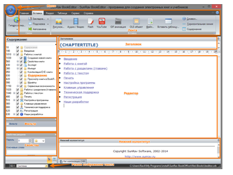
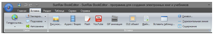
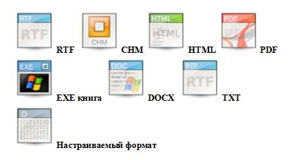
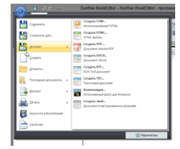

Урок 11. Текстовые документы и оценка их количественных параметров
Перечень рассматриваемых вопросов:
- Узнать, что такое текстовый документ.
- Познакомиться с компьютерными программами для создания текстовых документов».
- Научиться вычислять информационный объём фрагмента текста.
- Выяснить, что такое кодовая таблица.
- Вычислять информационный объём фрагмента текста.
Тезаурус:
Текстовый документ – это, представленная на бумажном, электронном или ином материальном носителе, информация в текстовой форме.
Текстовый редактор – это прикладная программа для создания и обработки текстовых документов.
Текстовый процессор – это текстовый редактор с широкими возможностями, позволяющий выполнять различные операции с текстом.
Соответствие между изображениями и кодами символов в тексте устанавливается с помощью кодовых таблиц.
N = 2i
I = K · i
В зависимости от разрядности используемой кодировки информационный вес символа текста, создаваемого на компьютере, может быть равен:/p>
8 битам (1 байт) – восьмиразрядная кодировка;
16 битам (2 байта) – шестнадцатиразрядная кодировка.
Теоретический материал для самостоятельного изучения
На протяжении тысячелетий люди записывают информацию. В течение этого времени менялось и то, на чём записывают информацию, и то, с помощью чего можно это сделать. Это были – глиняные дощечки, папирусы, береста, а также бумага. Но за это время не менялось главное: чтобы внести изменения в текст, его нужно было переписать, а это достаточно долгий и трудоёмкий процесс. И на смену рукописным документам пришли текстовые. Сегодня на уроке мы познакомимся с технологией создания таких документов.
Текст является одной из важнейших форм представления информации об окружающей действительности. Тестовый документ может быть статьёй, докладом, рассказом, стихотворением, объявлением, справкой и так далее.
Любой текстовый документ состоит из разделов, которые в свою очередь, могут содержать подразделы. Каждый раздел имеет название и заголовок. Текст по смыслу разбивается на абзацы, который, в свою очередь, состоит из строк, слов, символов.
Документ, кроме текста, может содержать рисунки, таблицы, схемы и многое другое.
Компьютер позволяет человеку создавать тексты любой сложности, при необходимости вносить в них изменения, хранить долго текстовую информацию, печатать на принтере и даже отправлять текст с помощью электронной почты на другие компьютеры.
Компьютерная технология обладает рядом преимуществ по сравнению с технологией бумажной. Это и удобство редактирования, лёгкость копирования, лёгкость передачи на расстояние по сетям. Это лишь малый список достоинств компьютерной технологии.
Большинство текстов, создаваемых на компьютере, выводится на печать и используется в традиционной бумажной форме.
В последнее время широкое распространение получили электронные книги.
Для работы с текстом с помощью компьютера используются специальные программы. Их называют текстовыми редакторами, например, блокнот или текстовыми процессорами, например, MicrosoftWord.
Текстовые процессоры обладают более широкими возможностями, позволяющими не только писать письма, рассказы, рефераты и оформлять их, но и, например, выполнять автоматическую проверку правописания, вставлять гиперссылки, переводить текст на другой язык.
Текстовые редакторы же удобны для создания небольших несложных по структуре и оформлению текстов. Такие тексты состоят из букв, цифр, знаков препинания и специальных символов, которые можно ввести с помощью клавиатуры компьютера. Таблицы, схемы, чертежи такой редактор обрабатывать не может. В текстовых редакторах реализован минимум возможностей для оформления текстового документа, также его можно использовать для создания web-страниц.
При нажатии на клавиатуре на символ, в компьютер поступает определённая последовательность электрических импульсов, которые с помощью специальной микросхемы, преобразуются в цепочки из восьми нулей и единиц, то есть, в двоичный код. Компьютер расшифровывает их и понимает, какая клавиша была нажата.
Распознавание символов происходит благодаря тому, что в компьютере содержатся кодовые таблицы, в которых имеются двоичные коды всех символов, расположенных на клавиатуре. Одной из таких таблиц является таблица ASCII (эй си).
Кодовая таблица содержит коды для 256 различных символов, пронумерованных от 0 до 255.
Коды с номерами от 0 до 32 соответствуют управляющим символам; коды с номерами от 33 до 127 – изображаемым символам: латинским буквам, знакам препинания, цифрам, знакам арифметических операций и так далее. Коды с номерами от 128 до 255 используются для кодирования букв национального алфавита, символов национальной валюты и прочего.
Поэтому в кодовых таблицах для разных языков одному и тому же коду соответствуют разные символы.
Разрядность двоичного кода i и количество возможных кодовых комбинаций N связаны соотношением N = 2i. Восьмиразрядный двоичный код позволяет получить 256 различных кодовых комбинаций, которые и хранятся в таблице ASCII.
Восьмибитовые кодировки не позволяют использовать более двух языков одновременно. Для устранения этого ограничения был разработан новый стандарт кодирования символов – юникод. В юникод каждый символ кодируется шестнадцатиразрядным двоичным кодом, что позволяет закодировать 65536 различных символов. Первые 128 символов юникода совпадают с таблицей эй си, а дальше размещены алфавиты всех современных языков, а также все математические и иные научные символьные обозначения.
Информационный объём текстового сообщения равен произведению количества символов в сообщении на информационный вес символа алфавита.
Например, нужно найти информационный объём текста из 24 символов в кодировке юникод. Помним, что в этой кодировке на каждый символ отводится 2 байта.
Дано:
К = 24
i = 2 байта
I= ?
Решение:
I = K · I = 24 · 2 = 48 байтов.
Информационный объём текста составляет 48 байтов.
В зависимости от разрядности используемой кодировки информационный вес символа текста, создаваемого на компьютере, может быть равен восьми битам или 16 битам.
Итак, сегодня мы узнали, что такое текстовый документ, познакомились с технологией создания таких документов, а также научились пользоваться кодовыми таблицами и находить информационный объём текста.
Материал для углублённого изучения темы.
Прежде всего нужно скачать программу SunRavBookOffice . После того как программа загрузится на компьютер, ее надо установить.
Главное окно программы SunRavBookOffice выглядит так:

Приступаем к созданию книги.
Первым делом нужно определить заголовок и нижний колонтитул. Для этого нужно использовать текстовые редакторы «Заголовок» и «Нижний колонтитул».
Один из основных элементов электронной книги – содержание. Оно определяет логическую структуру книги.
После запуска программы уже есть один раздел. Он называется «Новый раздел». Для того чтобы изменить название раздела, надо щелкнуть по нему мышью и нажать клавишу F2, ввести новое название и нажать клавишу ENTER. Флажок слева от названия раздела определяет, надо ли показывать этот раздел в книге или нет. Чтобы добавить новый раздел самого верхнего уровня, нужно нажать клавши Shift+Ctrl+Ins. Для добавления подраздела в текущий раздел надо выбрать раздел и нажать клавишу Ins. Перенести раздел можно простым перетаскиванием в нужное место.
Теперь приступаем к формированию содержимого главы. Для этого нужно щёлкнуть указателем мыши по «Редактору» и начать вводить текст. Работа с редактором мало чем отличается от работы в таких текстовых редакторах, как Microsoft Word и т. п. Работают все привычные сочетания клавиш («горячие клавиши») такие, как: Ctrl+X, Ctrl+C, Ctrl+V, Ctrl+B, Ctrl+I и т. д. Форматирование текста производится с помощью инструментальной панели, находящейся в верхней части редактора.
Если у автора уже есть наработанные материалы: документы Microsoft Word, текстовые документы, рисунки, то Sun Rav Book Editor позволяет их использовать. Устанавливается курсор в то место текста создаваемой книги, куда хотим вставить нужный материал, выбираем вкладку «Вставка», затем – пункт, в зависимости от того, какой тип документа нужно добавить.

В текст главы, кроме внешних документов, можно вставить дополнительные элементы: гиперссылки, таблицы, символы, горизонтальные линии, разрывы страниц, элементы.
SunRavBookEditor может создавать книги в разных форматах:

Для того чтобы опубликовать электронную книгу, просто выберите тип файла в меню «Экспорт», выберите папку для сохранения, введите имя файла и нажмите кнопку ОК.

И, конечно же, не забудьте сохранить файл проекта – Ctrl+S.
Теперь вы не ограничены в литературном творчестве! Дерзайте!